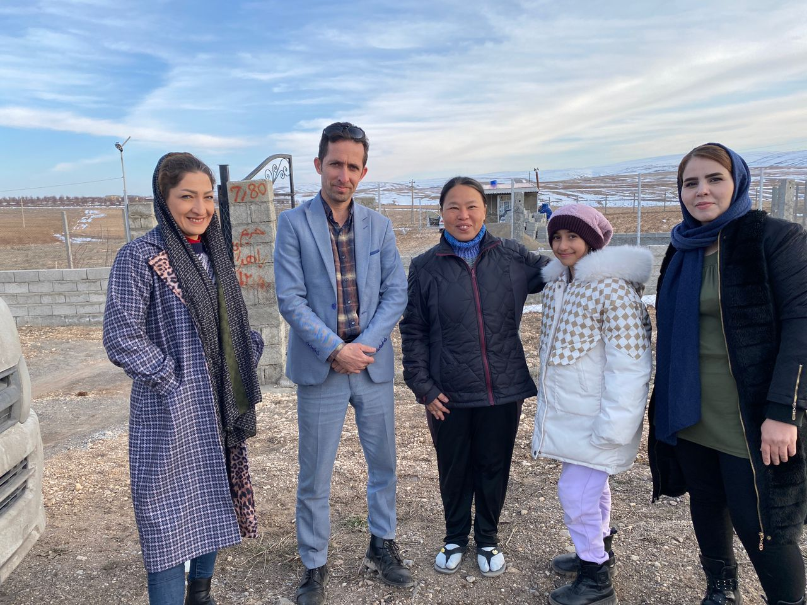
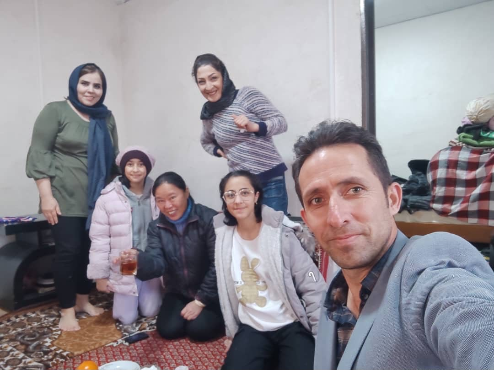
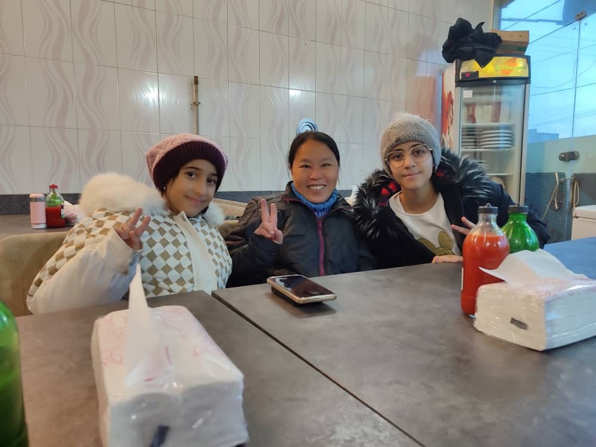
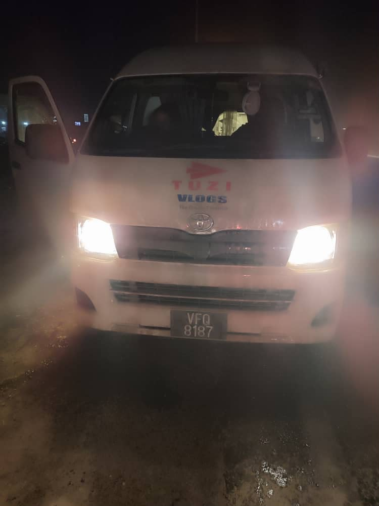

Real Story · 中文
有些人不是先问你发生什么事，而是先把车停下来帮你。
28 February 的 snow highway 之后，我没有进 Tehran。 因为我必须赶上 20 April 2024 从 Hirtshals 去 Iceland 的 ferry， 所以我选择继续往北走。
29 February，我睡在 Arak highway 的 petrol station。 接下来的北上路段，路边厚厚的雪提醒我： 我已经真正进入冬天的 Iran。
The Wrong Road
Google brought me somewhere a car should not go.
I wanted to go toward the Nordoz Border Terminal. But Google Maps brought me into a place where local people could pass with motorbikes, while a car like Toyotaki could not pass properly.
While driving into the village area, I suddenly noticed something even more dangerous: the windscreen was full of oily traces. I could not see the road clearly. I immediately pulled aside.
The Rescue
He understood before I fully understood.
Mr. Gader Salmani was driving behind me. For God’s sake, he immediately cut over and pulled in front of me. In winter conditions, he knew what I was facing without needing a long explanation.
He took out blue windscreen washer fluid and a cloth, and helped clean my windscreen. This was not a problem I had known how to solve. I am used to being strong and settling many things myself, but oily windscreen trouble in winter was outside my road knowledge.

Village Home
From roadside trouble to family welcome.
After helping me by the roadside, Mr. Salmani invited me to his village house. There I met his wife and lovely daughters. The moment changed completely: from danger, confusion, and poor visibility, into tea, smiles, warmth, and family welcome.

Pizza Before the Border Road
The daughters wanted to talk.
His daughters loved to talk with me. So we went to have pizza together before Mr. Salmani guided me back to the correct road toward Nordoz.
It was a small stop, but it changed the whole feeling of the day. A wrong road did not end as a mistake. It became a family memory.

One More Time
He cleaned the glass again.
Before I left, Mr. Salmani cleaned my windscreen one more time. Then he gave me a brand-new bottle of blue windscreen washer fluid.
I used it carefully during the journey. Even now, I still keep that washer-fluid container at home, with some balance left inside. It is not just a bottle. It is proof of a man who understood the road and helped without drama.

English Memory Summary
A winter road rescue before Nordoz.
After the snow highway incident, Tuzi skipped Tehran and continued north because she needed to catch the Hirtshals–Iceland ferry on 20 April 2024. She slept at an Arak highway petrol station on 29 February, then continued toward the northbound route through thick roadside snow.
While trying to reach the Nordoz Border Terminal, Google Maps led her into a village route unsuitable for her van. At the same time, Toyotaki’s windscreen became covered with oily residue, making it difficult to see. Mr. Gader Salmani, driving behind her, immediately pulled in front, stopped, and helped clean the windscreen with washer fluid and a cloth.
He then invited Tuzi to his village home, introduced her to his wife and daughters, took her for pizza with the daughters, guided her back toward the correct road, cleaned the windscreen again, and gave her a new bottle of windscreen washer fluid.
Heart Statement
真正可靠的人，有时候不是说很多话的人，而是看见危险就先停下来的人。
I was strong enough to drive far. But on that winter road, I still needed someone who understood what the glass was trying to tell me.